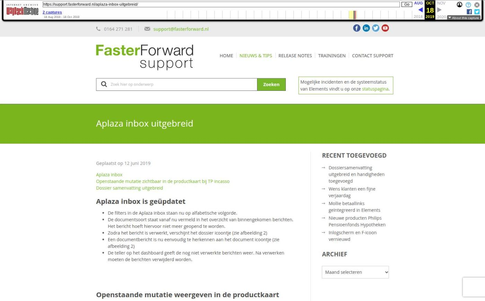

Aplaza inbox uitgebreid

Tekstinhoud
Geplaatst op 12 juni 2019
Aplaza inbox
Openstaande mutatie zichtbaar in de productkaart bij TP incasso
Dossier samenvatting uitgebreid
Aplaza inbox is geüpdatet
De filters in de Aplaza inbox staan nu op alfabetische volgorde.
De documentsoort staat vanaf nu vermeld in het overzicht van binnengekomen berichten. Het bericht hoeft hiervoor niet meer geopend te worden.
Zodra het bericht is verwerkt, verschijnt het dossier icoontje (zie afbeelding 2)
Een documentbericht is nu eenvoudig te herkennen aan het document icoontje (zie afbeelding 2)
De teller op het dashboard geeft de nog niet verwerkte berichten weer. Na verwerken moeten de berichten verwijderd worden.
Openstaande mutatie weergeven in de productkaart
(Indien u tussenpersoon incasso kantoor in Elements gebruikt)
Er is een mutatie op een polis die nog niet verwerkt is vanuit de ADN module. In de productkaart verschijnt nu een melding dat er nog een openstaande mutatie is met een link naar de betreffende batch. Bij meerdere niet verwerkte mutaties zijn er meerdere meldingen.
Voorwaarde is dat het mutatiebericht voortkomt uit ADN, geen negatieve beoordeling heeft en er geen boeking heeft plaatsgevonden.
Dossiersamenvatting uitgebreid
De dossiersamenvatting is uitgebreid met:
Polisnummer
Product omschrijving
Categorie: Algemeen, Release